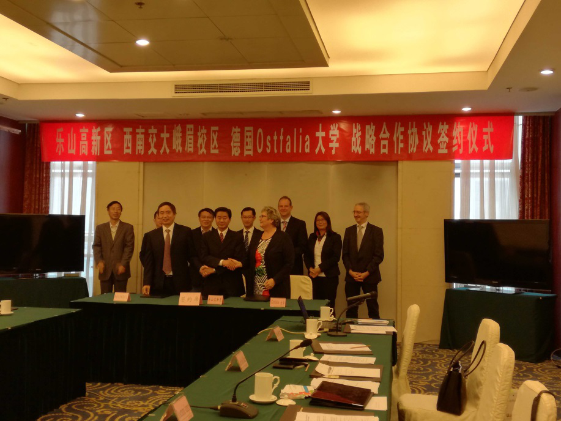
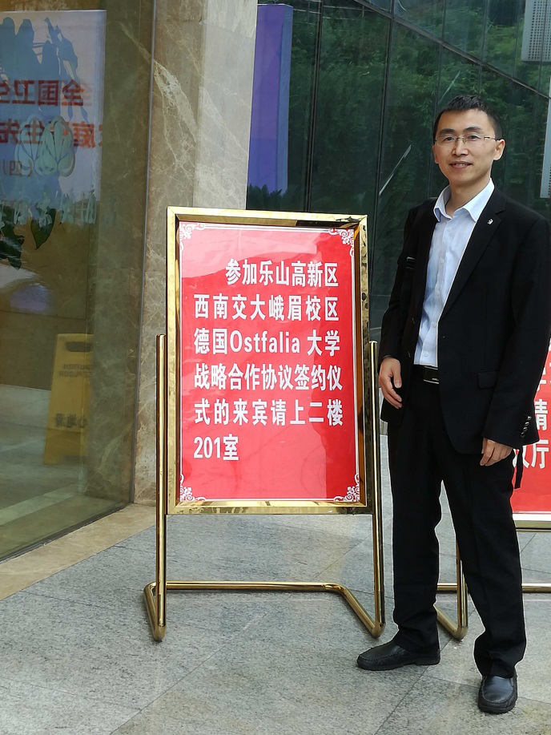

乐山高新区与西南交大峨眉校区及德国奥斯特法利亚应用科学大学签订三方合作协议
作者：汉斯猫
时间：2016-10-20 21:14:13 | 来源：本站
2016年10月19日，在唐阳教授的多方协调下，邀请了德国奥斯特法利亚应用科学大学校长Rosemarie Karger 莅临乐山，与乐山高新区和西南交大峨眉校区进行了深入交流，组织策划三方共建“四川（乐山）中德科技促进中心”。
会上，三方代表签署了合作共建“四川（乐山）中德科技促进中心”意向性协议，同时，就共同开展科技研发、 人才培养、成果转化等进行了交流。三方将按照“优势互补、互惠互利、共同发展”的原则， 在整合各自现有资源的基础上，合作共建“四川（乐山）中德科技促进中心”， 支持乐山“一总部三基地”经济转型升级，助力乐山市社会经济增长、企业发展和本地企业的国际化发展。
Ostfalia大学副校长Gert Jann Bikker、国际合作部主任Holger Zimpel、机械工程系教授Xiaobo Liu-Henke、 西南交通大学峨眉校区机械系主任冯鉴和唐阳教授，及相关部门负责人参加了签约仪式。